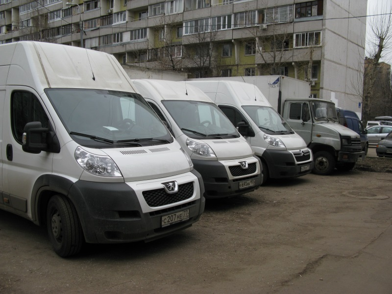

Наши автомобили
Автомобили, производящие всю работу по передвижению грузов по Москве и далеко за её пределы, где зачастую кончаются дороги, являющиеся, по сути, хлебом нашего делопроизводства, представляют собой образчик надёжности, порядка и частоты. Ведь, как вы машину содержите и подготавливаете, «так она и поплывёт…», вот они рабочие лошадки, без которых весь этот разговор, не имел бы ни какого практического смысла и применения. Машина в нашем понимании, как женщина, которую надо «смазывать и подмазывать» а так же холить и жалеть. Вовремя менять масло, не скупиться на своевременную зимнюю резину, по возможности не пропускать ТО, следить за чистотой салона грузового отсека, не забывать периодически, полировать металлический кузов. Не редко приходится наблюдать и самого водителя неряшливого (ну это Бог с ним), но и машину доведшего до неприглядного состояния. А в грузовом отсеке, в прямом смысле слова, картошку сажать пора, столько мусора, пыли и грязи, что определить возраст машины можно. Сразу видно, что это за водитель, на что способен, как работает и можно ли на него рассчитывать.
Машины в организации «Грузоперевоз» используются различных моделей от легковых типа седан ZAZCHANCE; мощность двигателя Квт/л.с 63,0\86.0 двигатель см 1498, maxima 1593, до фур. Но основной упор делается на самый распространённый и ходовой вид авто транспорта 1,5 -3,0 тонны, как Пежо Боксер (PeugeotBoxter) фургон грузовой, мощность двигателя Квт\ л.с 88.3\120.0; Рабочий объём Vдвигателя 2200 см; Разращенная максимальная масса 3500 м, без нагрузки 1750кг. Как видите, таже «полуторка», но французского производства, очень вместительна и удобна ещё тем что грузить приходиться около пола, в каком-то полуметре от поверхности, что в разы упрощает погрузку значительных тяжестей, таких как пианино и сейфы. Высота погрузочного пространства составляет 2,0 – 2,2, при длине от 3,0 метра до 4,0. Бесспорно удобный, с гидроподъёмником, находящийся, в расположении «Грузоперевоз» автомобиль ЗИЛ «Бычок» АФ-4741ТО; модель двигателяД2459Е2, Мощность двигателя кВт/л.с 95,7/130,0. Рабочий V двигателя 4750 м; Разрешённая max масса 6950 кг; Масса без нагрузки 4105 кг. Объём погрузочного пространства 20 куб. метра, который вмещает в себя, при правильной, рачительной погрузке, двухкомнатную полновесную квартиру. Есть «Бычки» и с термооборудованным кузовом.

Телефоны: +7 499 202-85-50, +7 916 019-25-01 круглосуточно без выходных E-mail: kazak_pesnia@mail.ru